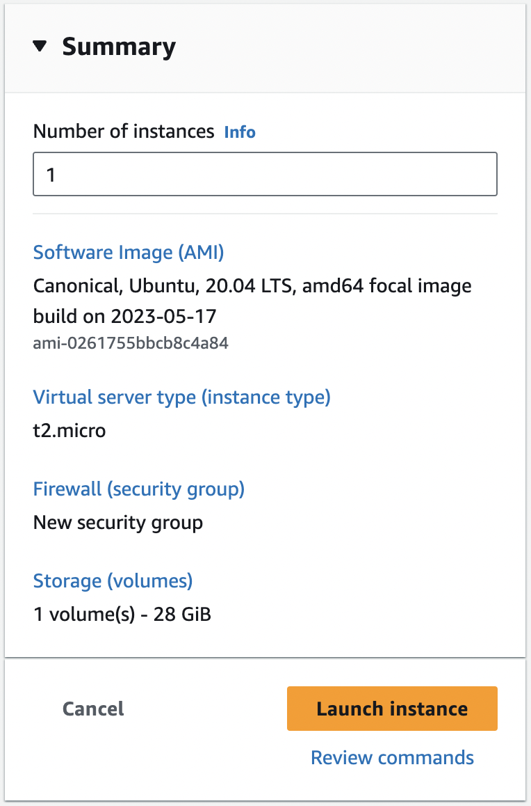

Temperature/Humidity
Tutorial
Setting up the EC2 Instance
- Start the Sandbox using the AWS Academy webpage
- Enter into AWS after the Lab is initialized
- Inside AWS, go into EC2 instance > Launch Instance
- Choose the following parameters to create the instance:
- Amazon Machine Image --> Ubuntu Server 20.04 LTS (HVM), SSD
- Key Pair name ---> Proceed without keypair
- Storage ---> 28 GB

- Keep all other configuration as their default values
- Click on Launch Instance
Configuring the EC2 Instance and setting up the server
- Connect with EC2 instance via EC2 Instance Connect from the Connect menu
- On success we will see a virtualized terminal in a new tab
- We now need to run the following commands to install the required packages:
- The following command will run a bunch of commands specified in the gist page:
curl -s https://gist.githubusercontent.com/tejaswigowda/f289e9bff13d152876e8d4b3281142f8/raw/df37df2e16a3166e686357a045751a7c18bbeebe/installNodeMongoUbuntu16.04.sh | bash
- Install n using :
sudo npm install -g n & sudo n latest
- Install http-server :
sudo npm install -g http-server
- Use
clone repo-url to download the server code
- Run portmap.sh using the command :
sh portmap.sh located in the basic-servers directory
- Start the server using the command :
node server.js located in the captureDataserver-TempHum directory
Editing the Inboaund rules in AWS for our EC2
- Open the security settings for the EC2 instance and click on the security group
- Click on Edit Inbound rules
- Click on Add rules and add the following ports :
- Click on Save rules
Now on to the Arduino / Client
- Connect the DHT11 sensor to the TTGO watch and connect it to the laptop
- Open the DHT11Default.ino in the ArduinoIDE
- Install the library SimpleDHT in the Arduino IDE
- Change the host IP to your EC2 Public IP
- Change the SSID and Password to your internet hotspot
- Verify and Upload the code to the TTGO watch
- Check the Serial Monitor to verify if everything is working fine